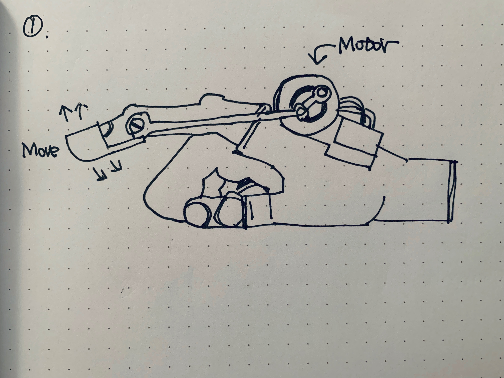
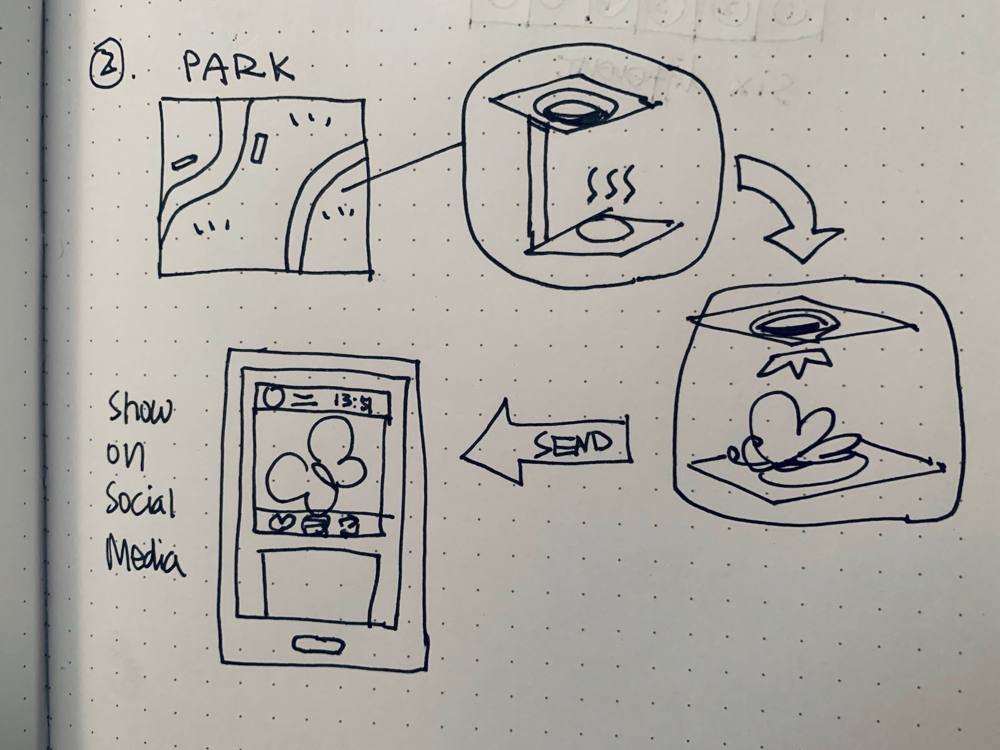
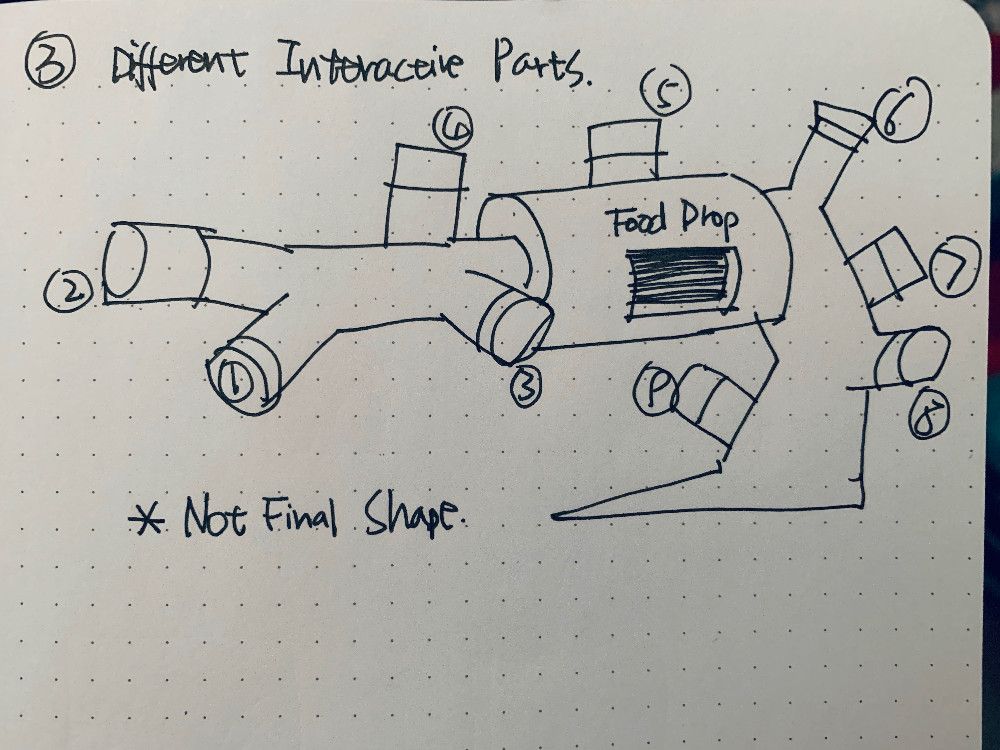

Final Proposal
Yufei Zhang
Further research, findings, and relevance to our design
Proposal one: the keep working of the Aye-aye empathy machine
For the first idea, I want to keep working on the Aye-aye empathy machine. I’ll try to make the advice I got into iterations, and make the empathy machine more functional and stand on itself. The first prototype use the piezo knock sensor and is mostly based on user to knock on some surface. But the problem of that version is that user only have to knock as fast as they can but the knocking is without purpose. And also a problem is that the feedback come from the knocking is a series of vibration of random times. The user have to knock the same times as the feedback. But if the user just keep knocking regardless they will still go through the process.
The first part I’ll change will be the finger part. The aye-aye’s finger moves eight times a second, and I think I’ll use a motor to make the user’s finger taps eight times a second as well. And also I want the user to be able to detect something through taping instead of just get the information from the machine. I’m thinking about making a log with warm in it and try to mimic the Aye-aye’s foraging process as much as possible. The user will tap on the log and get the feedback in the form of vibration. The stronger the vibration gets the closer the warm is. Then the whole on the log will open and the user will use the finger and try to dig out the warm in the log.

Link for video: Empathy Machine Aye-aye - YouTube
Proposal two: Instagram for insects (but actually still for human)
For the second idea, I want to work with insects in the city. There are a huge amount of insects in the city but few people really notice them. I want to set up some devices in the parks and try to attract insects and took pictures of them and post them on social media with time and location. In that case, people can feel the presence of the incests and paying more attention to the wild insects around us.
The device will use honey water to attach insects in the parks, mostly during night and will sensor to detect a insect arrived and will take photo and send it to me through internet.

Proposal three: Curious Box for birds.
The third idea will be the continue development of our midterm project which is the Curious Box. The first field test is not that success. We were trying to get away from making the project a feeding machine but the food turned out to be essential. And also the shape we choose and the target birds we chose are not very ideal. So I want to keep developing this idea but focus on birds in the shelter or home-raised and will make feeding part of the motivation.
The Shape: The shape we used to use is a standard cube shape. We thought we chose a normal shape that won’t cause much attention but after rethinking about it is actually anthropomorphism cause although cube is a normal shape for human for birds it is quite weird and should be alarmed. I think this time I will use shape like column that are less interrogating for birds.
The Mechanism: Cause this is still a curious box, so randomness will still be a big part of it. I will make several parts that could be interactive, but the result will be different. And some of the result will be feeding, which will be the motivation for the birds to keep engaging with the device. The reason of doing this is make this less a training process but a way to see the bird trying to figure out the inner mechanism of the device. And after the bird is fully engage with the device, I’ll make it impossible for the feeding result in occur and see how long the bird will keep engage or how they will engage.
Link for video: Curious Box - YouTube
